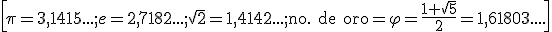

Números reales
Hay números que no podemos expresar como cociente de otros dos números:

\[\pi =3,1415...;e=2,7182...;\sqrt{2}=1,4142...;\text{no. de oro}=\varphi =\frac{1+\sqrt{5}}{2}=1,61803....\]
Estos números se llaman números irracionales, si los añadimos a los números racionales obtenemos números reales, , que se representan en la recta que se llama recta real:
Para representar algunos de estos números se utiliza el Teorema de Pitágoras
:
Ahora tenemos estos conjuntos de números

Ejercicio 1
Decide si las siguientes afirmaciones son ciertas o falsas:
Retroalimentación
Falso
Retroalimentación
Verdadero
Retroalimentación
Falso
Retroalimentación
Verdadero
Ejercicio 2. Representa en la recta real:
Obra publicada con Licencia Creative Commons Reconocimiento No comercial Compartir igual 3.0